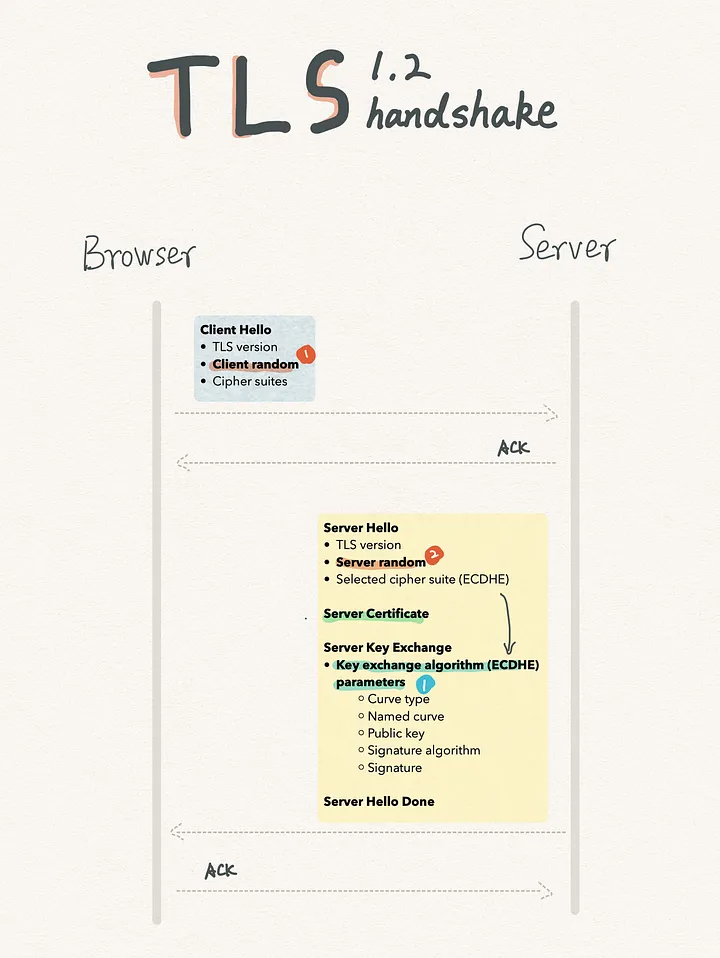

Wireshark Overview
- Help Documentation: Access comprehensive documentation for all features via
Helpin Wireshark.
TCP Analysis
Stream Index
- Purpose: Wireshark calculates this to track individual streams.
- Adjustments: To view the original sequence numbers instead of relative ones, right-click → Protocol Preferences → uncheck “Relative Sequence Numbers”.
Flags
- Common Flags: ACK, RST, etc.
Window Size
- Displayed Value: Shows the host window size.
- Calculated Window Size: Represents the effective window size.
Checksum
- Validation: Wireshark does not automatically validate checksums. To enable, right-click → Protocol Preferences → check “Validate TCP Checksum if Possible”.
Options
- Max Segment Size (MSS): Configurable TCP option.
Sync/Ack Flow Graph
- View: Navigate to
Statistics→Flow Graph.
TCP Options
-
Common Options:
- Timestamps
- Maximum Segment Size (MSS)
- Selective Acknowledgment (SACK)
- No-Operation (NOP)
-
Data Wrap: Data added by Wireshark is enclosed in brackets
[].
Handling Missing Segments
- Initial Transmission: Example segments sent: 1-2, 4-6, 6-8, 8-10.
- Missing Segment: Missing segment 2-4 results in duplicate ACK for the last received segment.
- Retransmission: Sender retransmits the missing segment upon receiving a duplicate ACK.
- Acknowledgment: Receiver acknowledges the retransmitted segment.
UDP Analysis
- Display: Shown in a format diagram.
IPv6
- Differences:
- No broadcast support.
- No fragmentation.
- TTL (Time to Live) is known as Hop Limit.
ICMP
- Usage: Primarily for error reporting and querying.
DNS
Query
- Transaction ID: Unique identifier for each query.
- Flags: Various DNS flags.
- Questions: Number of questions in the query.
- Queries: Contains the DNS queries made.
Response
- Answer PRS: Number of answers.
- Answers: Contains answers to the questions.
DHCP
- DORA Process:
- Discover: Client sends a discover message.
- Offer: Server sends an offer message.
- Request: Client requests an IP.
- ACK: Server acknowledges the request.
Expert System
- Alerts: Provides color-coded alerts:
- Red: Error
- Yellow: Possible problem
- Green: Note-worthy
- Blue: Typical workflow
- Issues:
- Zero Window: Indicates the buffer is full.
- Duplicate ACK: Identifies duplicate acknowledgments.
Wi-Fi Frames
- Types of Frames:
- Management Frame: e.g., Beacon
- Control Frame
- Data Frame
Command Line Tools (Windows)
- Netsh Trace
- Dumpcap
- Tshark
IO Graph
- View: Go to
Statistics→IO Graphs. Customize filters, x-axis, and y-axis for visual representation.
Conversation Analysis
- Endpoints: Analyze conversations between two IP addresses.
- Graph Options: View metrics like round-trip time, throughput, and window scaling.
Voice Over IP (VoIP)
- Protocol: Real-Time Transport Protocol (RTP) is used for media streaming.
Filters
- Retransmissions and Duplicates:
tcp.analysis.flags && !tcp.analysis.window_update - Reset Packets:
tcp.flags.reset - HTTP Response Time:
http.time > 0.25
TCP SACK (Selective Acknowledgment)
- Scenario: If segments 1-100, 100-200, and 200-300 are sent, and 100-200 is missing, the client sends an ACK for 100 with SACK indicating the missing range.
MTU (Maximum Transmission Unit)
- Definition: Maximum size of an IP packet that can be sent over a network link.
- Fragmentation: If a packet exceeds the MTU, it is split into smaller fragments.
MSS (Maximum Segment Size)
- Definition: Maximum amount of data that can be sent in a single TCP segment.
- Negotiation: Reported in TCP SYN segments but not negotiated.
Delta Time
- Setting: Add
Delta Timeto columns to show the time difference between packets.
IO Graph
- Access: Go to
Statistics→IO Graphs. - Customization:
- Filters: Choose filters to apply to the graph.
- Axes: Set the x-axis and y-axis parameters.
- Visualization: View traffic data visually. Customize filters and axis settings to tailor the graph to your needs.
Conversation Analysis
- Endpoints: Analyze conversations between two specific IP addresses.
- Graph Metrics: Choose graphs to view:
- Round-Trip Time (RTT)
- Throughput
- Window Scaling
TCP Stream Graph
- Stevens Graph: Displays TCP sequence numbers over time.
- Tcptrace: Visualizes TCP metrics.
- Throughput: Shows average throughput.
- Round-Trip Time (RTT): Measures the time taken for packets to travel to the destination and back.
- Window Scaling: Visualizes window size and outstanding bytes.
Time to live → (when server or client sent it start with 64 or 128 or255 ) so on reveceive pakcet check what is the TTL to find how may routes it taked.
In TCP, when there’s a gap in the received sequence numbers, the receiver uses several mechanisms to handle the situation and ensure reliable data transfer. Let’s use your example to illustrate how TCP handles a missing segment:
-
Initial Transmission:
- Sender (Host A) sends TCP segments with sequence numbers 1 to 2, 4 to 6, 6 to 8, and 8 to 10.
- Receiver (Host B) successfully receives and acknowledges segments 1 to 2, 4 to 6, 6 to 8, and 8 to 10.
Host A -----> Host B SEQ: 1-2 ACK: 3 SEQ: 4-6 ACK: 7 SEQ: 6-8 ACK: 9 SEQ: 8-10 ACK: 11 -
Missing Segment (2 to 4):
- Segment with sequence numbers 2 to 4 is not received by Host B.
-
Receiver’s Perspective:
- Host B detects the missing segment and sends a Duplicate ACK for the last correctly received segment (ACK: 3 in this case).
Host A <----- Host B SEQ: 1-2 ACK: 3 (DUP ACK) SEQ: 4-6 SEQ: 6-8 SEQ: 8-10 -
Retransmission Triggered:
- Host A, upon receiving the Duplicate ACK, realizes that Host B is missing segment 2 to 4.
- Host A retransmits the missing segment (2 to 4).
Host A -----> Host B SEQ: 2-4 ACK: 7 -
Subsequent Acknowledgments:
- Host B acknowledges the retransmitted segment (ACK: 5).
Host A <----- Host B SEQ: 2-4 ACK: 5
Now, the TCP sender and receiver have cooperatively resolved the issue caused by the missing segment. This process demonstrates how TCP uses acknowledgments, duplicate acknowledgments, and retransmissions to recover from packet loss and ensure the reliable delivery of data.
MTU link layer → Maximum Transmission Unit maximum size of an IP packet that can be sent over a link Fragmentation is allowed by MTU. If a packet is larger than the MTU, it is split up into smaller parts.
MTU is set on each router when the packet come big then that it will do fragmentation
MSS stands for Maximum Segment Size. It is the maximum amount of data that can be sent in a single TCP segment.
The Transmission Control Protocol (TCP) Maximum Segment Size (MSS) defines the maximum amount of data that a host accepts in a single TCP/IPv4 datagram.
This TCP/IPv4 datagram is possibly fragmented at the IPv4 layer. The MSS value is sent as a TCP header option only in TCP SYN segments.
Each side of a TCP connection reports its MSS value to the other side. The MSS value is not negotiated between hosts.
A TCP option called MSS is negotiated as part of the handshake. The IP header and the TCP header are not included.
Max can be 1460
TCP SACK (Selective Acknowledgment)
Selective Acknowledgment (SACK) allows a receiver to acknowledge non-contiguous blocks of data. This helps in efficiently managing data loss and retransmissions.
Example Scenario
-
Initial Transmission:
- Data Sent:
- Segment 1-100
- Segment 100-200
- Segment 200-300
- Data Sent:
-
Issue:
- Assume the client did not receive Segment 100-200.
-
Client Behavior:
- Acknowledgment (ACK): The client sends an ACK for the last successfully received segment, which is 100.
- SACK Option: The SACK option will indicate that the client received data up to 100 and is missing data in the range 100-200.
- SACK Block: The SACK block specifies:
- Left Edge: 100 (starting point of the missing data)
- Right Edge: 200 (end point of the missing data)
Client's ACK: 100 SACK Block: [100, 200) -
Server Action:
- Upon receiving the SACK block, the server understands that Segment 100-200 is missing and needs retransmission.
Filters
Filters in Wireshark help isolate and analyze specific packets or types of traffic. Here are some useful filters:
-
Retransmissions, Duplicates, and Window Updates:
- Filter:
tcp.analysis.flags && !tcp.analysis.window_update - Purpose: Lists all retransmitted TCP packets, duplicate acknowledgments, and window update packets.
- Filter:
-
TCP Reset Packets:
- Filter:
tcp.flags.reset - Purpose: Shows packets where the server has reset the connection, indicating that the server is not listening on the port.
- Filter:
-
HTTP Response Time:
- Filter:
http.time > 0.25 - Purpose: Lists HTTP responses that take longer than 25 milliseconds to process.
- Filter:
TLS 1.2 Handshake
It takes 4 steps to complete the handshake before sending the first encrypted request from a browser:
- Client Hello
- Server Hello
- Client key exchange and generate the master secret
- Finished
https://cabulous.medium.com/tls-1-2-andtls-1-3-handshake-walkthrough-4cfd0a798164

HTPP2
https://cabulous.medium.com/http-2-and-how-it-works-9f645458e4b2
SSL/TLS session keys and the server’s private key serve different purposes in the context of secure communication over the internet.
1
SS0
tshark -r 'el (1).cap' -Y "tcp.flags.syn == 1 && tcp.flags.ack == 0" -T fields -e ip.dst | sort | uniq -c | sort -nr
tshark -r 'el (1).cap' -Y "tcp.flags.syn == 1 && tcp.flags.ack == 0" -T fields -e eth.dst | sort | uniq -c | sort -nr
Finding SYN Packets Not Followed by SYN+ACK
1. Apply Display Filter
- Filter: Use the display filter
tcp.flags eq 0x02to show only packets where the SYN flag is set.- This filter isolates SYN packets, which are the initial packets in the TCP handshake.
2. Analyze Conversations
- Navigate to Conversations:
- Go to
Statistics→Conversationsin the Wireshark menu.
- Go to
- Apply Filter to Conversations:
- At the bottom of the Conversations window, check the option “Limit to display filter”. This ensures that only the filtered packets (SYN packets) are considered in the analysis.
- Select the TCP Tab:
- Click on the TCP tab to view only TCP conversations.
- Sort by Packet Count:
- Click on the “Packets” column header to sort the conversations by the number of packets.
3. Identify Connection Types
- Connections with 1 Packet:
- These are likely “good” connections where only a single SYN packet was sent. This could indicate that the connection was successfully established or that no response was received but no retries were made.
- Connections with More Than 1 Packet:
- These are most likely “unanswered” connections where the SYN packet was retried multiple times due to no SYN+ACK response. The presence of multiple packets typically indicates retries.
Tools
- https://apackets.com/ → to analyse the pcap file
Alternative
Capture the netwoek on os level
- install mitmproxy
install certificate by visiting http://mitm.it/ and download the certificate
sudo cp ~/.mitmproxy/mitmproxy-ca-cert.pem /usr/local/share/ca-certificates/mitmproxy.crt
sudo update-ca-certificates- configure on OS level
# Redirect HTTP traffic (port 80)
sudo iptables -t nat -A OUTPUT -p tcp --dport 80 -j REDIRECT --to-port 8080
# Redirect HTTPS traffic (port 443)
sudo iptables -t nat -A OUTPUT -p tcp --dport 443 -j REDIRECT --to-port 8080
to delete
sudo iptables -t nat -D OUTPUT -p tcp --dport 80 -j REDIRECT --to-port 8080
sudo iptables -t nat -D OUTPUT -p tcp --dport 443 -j REDIRECT --to-port 8080
to list all rules
sudo iptables -t nat -L OUTPUT -n --line-numbers
IN terminal set export HTTP_PROXY=localhost:8080 export HTTPS_PROXY=localhost:8080
To setup proxy on vscode setting.json
{
"http.proxy": "http://localhost:8080",
"http.proxyStrictSSL": false,
"http.proxySupport": "override"
}